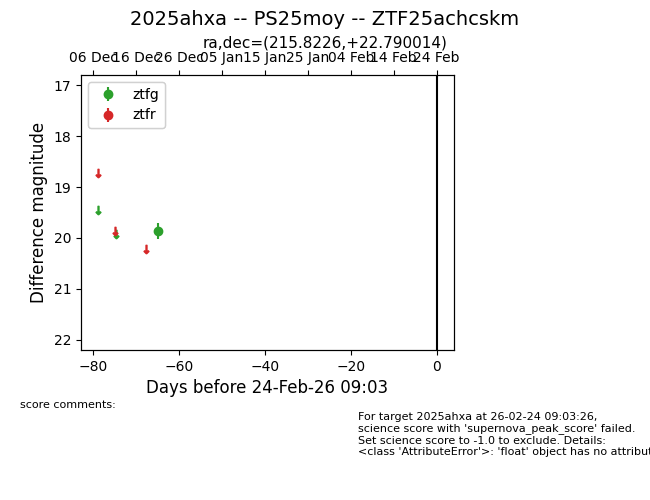
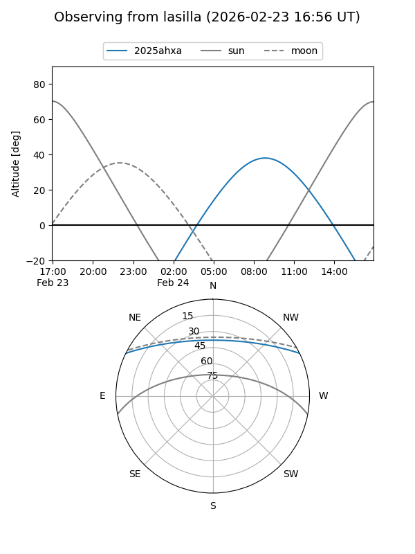
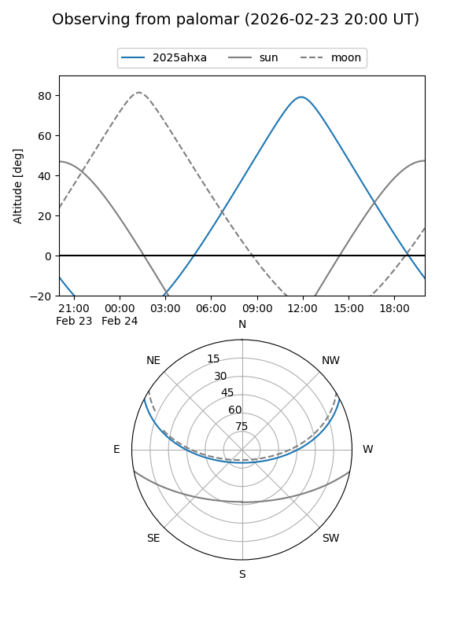

2025ahxa
Target 2025ahxa at 2025-12-31 17:00
Aliases and brokers:
FINK:
Lasair:
ALeRCE:
TNS:
YSE:
alt names
ZTF25achcskm (ztf,fink_ztf)
2025ahxa (tns,yse)
Coordinates:
equatorial (ra, dec) = 215.8226,+22.79001
equatorial (HMS+DMS) = 14:23:17.42,+22:47:24.05
galactic (l, b) = (26.2196,+68.76691)
Flags:
Photometry:
last ztfg=19.87
1 ztfg detections
Lightcurve

Visibility


Additional plots